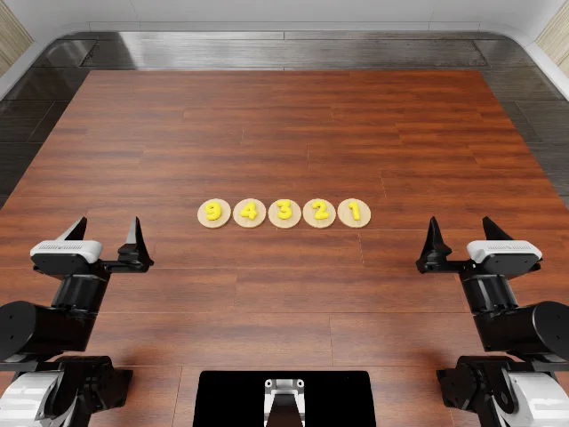

仿真评测 / 执行系统
RoboDojo 评测分析与 Robot Use Agent
分析 42 项仿真任务与 2,100 条 Astra 视频轨迹，复盘失败原因，并改进大模型接入机器人的 Harness。
0/1 → 2/4数字排列 · 同布局历史对比的原生成功数
平均耗时 −40.1% · 平均总 Token −56.2%

ROBOTICS PORTFOLIO
我研究机器人仿真评测与操作执行，也在真机上完成数据采集、VLA 微调和策略部署。
仿真评测 / 执行系统
分析 42 项仿真任务与 2,100 条 Astra 视频轨迹，复盘失败原因，并改进大模型接入机器人的 Harness。
0/1 → 2/4数字排列 · 同布局历史对比的原生成功数
平均耗时 −40.1% · 平均总 Token −56.2%

赛题开发 / Sim2Real
协助越疆科技开展赛事技术工作，搭建和调试 Isaac Sim 操作场景，并打通真机遥操、数据采集、π₀.₅ 微调及真机推理验证。
查看工作流